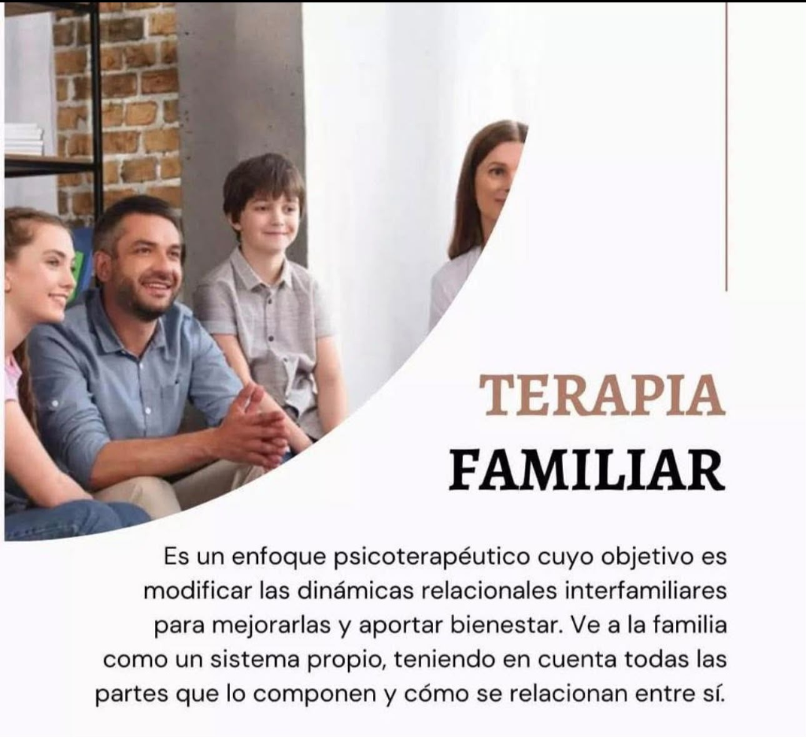

Psicólogo Internacional | Psicoterapeuta Sistémico Familiar
Especialista en Enfoque Sistémico Familiar. Tu bienestar y salud mental son mi prioridad.
📍 Atención Presencial en Guadalajara (Ver mapa) y Modalidad Online

Sesiones de terapia sin fronteras. Apoyo psicológico a través de videollamada, estés donde estés, manteniendo la misma eficacia y confidencialidad.
Un espacio seguro y confidencial para trabajar en tu desarrollo personal y bienestar emocional.
Completa el formulario y tu solicitud se enviará de forma automática y estructurada a nuestro WhatsApp para agilizar tu atención.
Descubre cómo nuestro entorno moldea nuestro comportamiento y los beneficios del Enfoque Sistémico Familiar.
Leer artículo completo →Las ventajas de la terapia psicológica internacional y cómo prepararte para tu primera sesión online.
Leer artículo completo →Realiza este test rápido de 3 preguntas para evaluar tu nivel de tensión actual.
1. En la última semana, ¿te ha costado trabajo relajarte o desconectarte?
Resolvemos tus dudas antes de dar el primer paso.
La primera sesión es una plática para conocernos. Hablaremos de tus motivos de consulta, tu historia y estableceremos juntos los objetivos. Es un espacio totalmente libre de juicios.
Las sesiones duran 50 minutos. Por lo general empezamos viéndonos una vez por semana o cada 15 días, pero la frecuencia la acordamos según lo que tú vayas necesitando.
¡No es obligatorio! El enfoque sistémico significa que analizamos cómo te afecta tu entorno (familia, pareja, amigos), pero la terapia puede ser perfectamente individual.